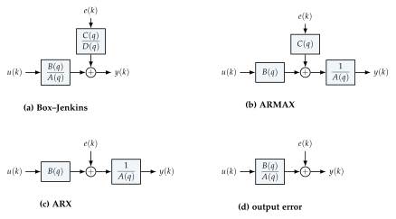

Chapter 6Prediction-error methods for polynomial models
In this chapter we study a particular class of linear input–output (I/O) models, the so-called polynomial models. Here the word polynomial refers to the representation of linear I/O relationships through polynomials in the delay (backward shift) operator \(q^{-1}\), i.e. as linear difference equations that relate the current output to past outputs, inputs and noise samples; the transfer functions of the system and of the noise are then ratios of such polynomials (Appendix B). We will introduce the most established way of estimating them: prediction-error methods (PEM). The key question we will address is: which identification problems can be solved via least squares? The answer (ARX models) and its limitations motivate both the more general PEMs and, later, subspace methods.
Polynomial models are not specific to system identification. Models of the same form, often without a measured input, are the standard tool of time-series analysis and forecasting: autoregressive (AR) models go back to Yule (1927, Section 1.3), and AR, moving-average (MA) and ARMA models, together with their extension to non-stationary series (ARIMA), were systematized by Box and Jenkins [32], whose name is also attached to one of the model classes of this chapter. In that literature the delay operator is usually called backshift or lag operator and denoted by \(B\) or \(L\) (\(By_t=y_{t-1}\)), and in econometrics the multivariable autoregression (VAR) is widely used. In signal processing, FIR and IIR digital filters are polynomial and rational functions of \(z^{-1}\), AR models are the basis of linear prediction (e.g. in speech coding) and of parametric spectral estimation, and adaptive filters (LMS, RLS) update on line the coefficients of FIR or ARX-type models. In control, ARMAX-type models underlie minimum-variance and generalized predictive control. Finally, nonlinear versions of the same structure (NARX, NARMAX) are among the most common black-box models in nonlinear identification and machine learning (Section 5.1). The letter X in ARX, ARMAX, NARX stands for eXogenous, i.e. measured, input \(u(k)\).
6.1 Input–output models with the delay operator
Instead of a state-space model, a discrete-time LTI system can be described by a linear difference equation that expresses the current output as a linear combination of past outputs and of current and past inputs:
This is the natural starting point for identification: the equation tells how to compute (or predict) \(y(k)\) from the data, and it is linear in the unknown coefficients \(a_1, \dots, a_{n_a}\), \(b_{n_k}, \dots b_{n_k + n_b -1}\). Its structure is fixed by three integers, the orders of the input–output model:
\(n_a\), the number of past outputs (of \(a\)-coefficients);
\(n_k\ge0\), the input delay: \(u(k-n_k)\) is the most recent input sample that affects \(y(k)\);
\(n_b\), the number of input samples (of \(b\)-coefficients).
Each coefficient is indexed by the delay of the sample it multiplies: \(a_i\) multiplies \(y(k-i)\) and \(b_j\) multiplies \(u(k-j)\). In identification \(n_a,n_b,n_k\) are design choices (Section 6.5).
The delay operator. Such equations are written compactly by means of the delay (backward shift) operator \(q^{-1}\),
(see Section B.2 for further details). Defining the polynomials in \(q^{-1}\)
eq. (6.1) reads
where the rational operator \(W(q)\) is defined through the difference equation it represents. The minus signs in \(A\) are the convention of these notes: they make all the terms of (6.1) appear with a plus sign (for the convention of [5] and MATLAB see Section 6.7). For instance, \(A(q)=1-a_1q^{-1}\) and \(B(q)=b_0+b_1q^{-1}\) (\(n_a=1\), \(n_b=2\), \(n_k=0\)) give \([1-a_1q^{-1}]y(k)=[b_0+b_1q^{-1}]u(k)\), i.e. \(y(k)=a_1y(k-1)+b_0u(k)+b_1u(k-1)\).
Relation with the transfer function. With zero initial conditions, since \(\Z\{f(k-\tau)\}=z^{-\tau}F(z)\), the \(\Z\)-transform of \(A(q)y(k)=B(q)u(k)\) is \(A(z)Y(z)=B(z)U(z)\): hence \(Y(z)=W(z)U(z)\), where \(W(z)=B(z)/A(z)\) is the transfer function written in powers of \(z^{-1}\), obtained from \(W(q)\) by replacing \(q^{-1}\) with \(z^{-1}\). Conversely, the transfer function1 \(W(z)=C(zI-A)^{-1}B+D\) of a SISO state-space system (5.2) is a proper ratio of polynomials in \(z\), which takes this form once numerator and denominator are divided by \(z^n\) (Section B.1). In short,
writing \(y(k)=W(z)u(k)\), as sometimes found in the literature, is an abuse of notation, since it mixes the complex variable \(z\in\C\) and the time \(k\). The orders are related to the order \(n\) of the system, i.e. the degree of \(\det(zI-A)\): if \(a_{n_a}\neq0\), \(b_{n_k},b_{n_k+n_b-1}\neq0\) and \(A\), \(B\) have no common factors, then
the largest lag appearing in (6.1).
Remark 6.1 (Different lags and system order). The largest lags of the output and of the input, \(n_a\) and \(n_k+n_b-1\), need not be equal. Comparing with \(W(z)\) in positive powers of \(z\) (Section B.1): the delay \(n_k\) is the relative degree of \(W\), and \(n_k=0\) if and only if \(W\) has a direct feedthrough term \(b_0u(k)\); \(n_a<n\) means that \(W\) has poles in \(z=0\); \(n_k+n_b-1<n\) means that \(W\) has zeros in \(z=0\). For instance, \(y(k)=a_1y(k-1)+b_3u(k-3)\) has \(n_a=1\), \(n_b=1\), \(n_k=3\), and
has order \(n=3\) (two poles in \(z=0\)). One could always write both polynomials with the common degree \(n\), as is customary in systems theory (here \(A(z)=1-a_1z^{-1}-0\,z^{-2}-0\,z^{-3}\), \(B(z)=0+0\,z^{-1}+0\,z^{-2}+b_3z^{-3}\)), but in identification this would mean estimating coefficients that are known to be zero (\(7\) parameters instead of \(2\)): this is why the orders \(n_a,n_b,n_k\) are kept distinct.
6.2 Polynomial models with noise
From now on we focus on the SISO case (\(p=q=1\)). The model \(y(k)=W(q)u(k)\) describes only the effect of the measured input; the output is also affected by measurement noise, disturbances and unmodelled dynamics, which are described by a noise term. The general LTI I/O model with noise is
where \(e(k)\) is a white random sequence with \(\E(e(k))=0\) and \(\E(e(i)e(j))=\sigma_e^2\delta_{ij}\) (the variance is denoted \(\lambda_e\) in [5] and in MATLAB, see Section 6.7), and the disturbance \(v(k)=H(q)e(k)\) is a colored noise, obtained by filtering white noise with \(H(q)\). The noise filter is assumed to be
monic, \(H(q)=1+h_1q^{-1}+\cdots\): this is no loss of generality, since a constant gain can be absorbed into \(e(k)\). The noise level is then set by \(\sigma_e^2\) alone, which is in general unknown and is estimated from the data as the sample variance of the prediction errors, \(\hat\sigma_e^2=V_N(\hat\theta)\), the minimum of the loss function (6.8) (Section 6.4);
stable, so that \(v(k)\) is a stationary process;
with a stable inverse, so that \(e(k)=H^{-1}(q)\bigl[y(k)-W(q)u(k)\bigr]\) can be reconstructed from the measured data: this is what makes it possible to predict \(y(k)\) (Section 6.6).
Both \(W\) and \(H\) are rational:
These are called polynomial models, since they are linear models described by polynomials in \(q^{-1}\). The names of the model classes are built from the terms of the difference equation: AR (autoregressive) for the term \(A(q)y(k)\), X (eXogenous input) for \(B(q)u(k)\), and MA (moving average) for \(C(q)e(k)\). Without an input, one has the classical time-series models AR, \(A(q)y(k)=e(k)\), MA, \(y(k)=C(q)e(k)\), and ARMA, \(A(q)y(k)=C(q)e(k)\). The model classes used in identification are, from the simplest to the most general (Figure 6.1 and Table 6.1):
FIR (finite impulse response): \(A(q)=1\), \(H(q)=1\), \(y(k)=B(q)u(k)+e(k)\); the output depends on a finite number of past inputs only, and the coefficients \(b_j\) are the samples of the impulse response (Section 7.4).
ARX: \(H(q)=1/A(q)\) (i.e. \(C=1\), \(D=A\) in BJ), \(y(k)=\dfrac{B(q)}{A(q)}u(k)+\dfrac1{A(q)}e(k)\iff A(q)y(k)=B(q)u(k)+e(k)\).
ARMAX: \(H(q)=C(q)/A(q)\) (i.e. \(D=A\) in BJ),
\[ y(k)=\frac{B(q)}{A(q)}u(k)+\frac{C(q)}{A(q)}e(k)\iff A(q)y(k)=B(q)u(k)+C(q)e(k), \]i.e. \([1-a_1q^{-1}-\cdots]y(k)=[b_{n_k}q^{-n_k}+\cdots]u(k)+[1+c_1q^{-1}+\cdots]e(k)\) and
\begin{multline*} y(k)=\underbrace{a_1y(k-1)+\cdots+a_{n_a}y(k-n_a)}_{\text{autoregressive part}} +\underbrace{b_{n_k}u(k-n_k)+\cdots+b_{n_k+n_b-1}u(k-n_k-n_b+1)}_{\text{exogenous input}}\\ +\underbrace{e(k)+c_1e(k-1)+\cdots+c_{n_c}e(k-n_c)}_{\text{moving average}} . \end{multline*}Output error (OE): \(H(q)=1\) (i.e. \(C=D=1\) in BJ), \(y(k)=\dfrac{B(q)}{A(q)}u(k)+e(k)\).
Box–Jenkins (BJ), the general one: \(y(k)=\dfrac{B(q)}{A(q)}u(k)+\dfrac{C(q)}{D(q)}e(k)\); plant and noise dynamics are independently parametrized.
Hence FIR \(\subset\) ARX \(\subset\) ARMAX \(\subset\) BJ and FIR \(\subset\) OE \(\subset\) BJ.
Where the noise enters. The classes differ in how the noise enters the model (Figure 6.1). In ARX and ARMAX the noise is filtered by \(1/A(q)\), the same dynamics as the input: \(e(k)\), or \(C(q)e(k)\), is an equation error, i.e. a disturbance acting at the input of the dynamics. In OE (and FIR) the noise is added to the output without any dynamics: it is an output error, i.e. measurement noise. BJ allows noise dynamics that are independent of those of the plant. Note that \(A(q)\) is therefore the denominator shared by plant and noise in ARX and ARMAX, but only the plant denominator in OE and BJ.
In these notes \(A(q)=1-a_1q^{-1}-\cdots-a_{n_a}q^{-n_a}\), so that the \(a_i\) appear with a plus sign in the difference equation \(y(k)=a_1y(k-1)+\cdots\), while \(C\) and \(D\) are written with plus signs. Another popular notation is the one of Ljung’s textbook [5], also used by the MATLAB System Identification Toolbox, which adopts a different convention (plus signs in \(A\), and \(F(q)\) for the plant denominator of OE and BJ); the relationship between the two notations is summarized in Section 6.7.

nf is
the order \(n_a\) of the plant denominator of OE and BJ, which MATLAB calls \(F(q)\)
(see Section 6.7).| model | \(W(q)\) | \(H(q)\) | predictor linear in \(\theta\)? | MATLAB |
|---|---|---|---|---|
| FIR | \(B\) | \(1\) | yes | arx with \(n_a=0\) |
| ARX | \(B/A\) | \(1/A\) | yes | arx(data,[na nb nk]) |
| ARMAX | \(B/A\) | \(C/A\) | no | armax(data,[na nb nc nk]) |
| OE | \(B/A\) | \(1\) | no | oe(data,[nb nf nk]) |
| BJ | \(B/A\) | \(C/D\) | no | bj(data,[nb nc nd nf nk]) |
6.3 ARX models and their one-step-ahead predictor
For an ARX model (\(C=1\) and \(D=A\) in BJ, or \(C=1\) in ARMAX),
with \(A(q)\), \(B(q)\) as in (6.2), i.e. (6.1) with the additional term \(e(k)\):
that is,
If \(n_k=0\) the model has a direct feedthrough term \(b_0u(k)\); since most physical systems are strictly proper, \(n_k\ge1\), and a common choice is \(n_k=1\), \(n_a=n_b=n\), i.e. \(B(q)u(k)=b_1u(k-1)+\cdots+b_nu(k-n)\), as in Example 6.1. The example of Remark 6.1, \(y(k)=a_1y(k-1)+b_3u(k-3)\), is an ARX model with \(n_a=1\), \(n_b=1\), \(n_k=3\).
What we say now is that the one-step predictor for the value of \(y(k)\), given the measurements up to \(k-1\), is
because the term \(e(k)\) in (6.4) is independent of all the data up to time \(k-1\) and the best guess for the noise is its mean, \(\E(e(k))=0\). (If \(n_k=0\) the predictor also uses the current input \(u(k)\), which is assumed to be known at time \(k\).) The \(n_a+n_b\) parameters are collected in
Whenever we fix \(\theta\) and put in the predictor the known values (training data) \(y(k-1),\dots,y(k-n_a)\), \(u(k-n_k),\dots,u(k-n_k-n_b+1)\), we end up with the value of the one-step predictor \(\hat y(k|k-1)\). Crucially, (6.5) is linear in \(\theta\):
where \(\varphi(k)\) is the regressor vector. What is left to do is setting up an optimization procedure to minimize an index of error and select the best \(\hat\theta\).
6.4 The prediction-error method for ARX models
The prediction error is
Suppose that the training data \(u(k)\), \(y(k)\), \(k=0,1,\dots,N\), are available. The regressor \(\varphi(k)\) in (6.6) contains \(y(k-1),\dots,y(k-n_a)\) and \(u(k-n_k),\dots,u(k-n_k-n_b+1)\), so it can be built from the available data only if \(k-n_a\ge0\) and \(k-n_k-n_b+1\ge0\), i.e. starting from
Prediction-error methods choose \(\hat\theta\) by minimizing the sample variance of the prediction errors that can be computed, i.e. the loss function
that is, \(\hat\theta=\argmin_\theta V_N(\theta)\). Define
that is, \(N-k_0+1\) equations in the \(n_a+n_b\) unknown parameters. So, equivalently, with the vector of residuals \(Y_{k_0:N}-\Phi_{k_0:N}\theta\),
whose solution is
which is exactly the least-squares solution of Chapter 4. From \(\hat\theta=[\hat a_1\cdots\hat a_{n_a}\mid\hat b_{n_k}\cdots\hat b_{n_k+n_b-1}]\T\) we obtain \(\hat A(q)\) and \(\hat B(q)\).
Collect a training dataset \(u(k)\), \(y(k)\), \(k=0,\dots,N\) on your system (possibly also a testing dataset to validate the model).
Compute \(k_0=\max(n_a,\,n_k+n_b-1)\) and build \(Y_{k_0:N}\) and
\[ \Phi_{k_0:N}=\bmat{\varphi\T(k_0)\\ \vdots\\ \varphi\T(N)} =\bmat{y(k_0-1)&\cdots&y(k_0-n_a) & u(k_0-n_k)&\cdots&u(k_0-n_k-n_b+1)\\ y(k_0)&\cdots&y(k_0-n_a+1) & u(k_0-n_k+1)&\cdots&u(k_0-n_k-n_b+2)\\ \vdots&&\vdots&\vdots&&\vdots\\ y(N-1)&\cdots&y(N-n_a) & u(N-n_k)&\cdots&u(N-n_k-n_b+1)}, \]which contains only measured samples. For instance, for \(n_a=n_b=2\) and \(n_k=1\) (Example 6.1), \(\varphi\T(k)=[\,y(k-1)\;y(k-2)\mid u(k-1)\;u(k-2)\,]\), \(k_0=2\), and the first row of \(\Phi_{k_0:N}\) is \(\varphi\T(2)=[\,y(1)\;y(0)\mid u(1)\;u(0)\,]\).
Solve \(\hat\theta=\Phi_{k_0:N}\pinvsym Y_{k_0:N}\) and form \(\hat A(q)\), \(\hat B(q)\).
Some references build the regression from \(k=1\) and set the samples before time \(0\), which are not available, to zero. This is exact only if the system was at rest before \(k=0\); otherwise it introduces an error in the first rows, which is avoided by starting from \(k_0\) at the price of losing a few equations.
Identifiability. \(\hat\theta\) is unique iff \(\Phi_{k_0:N}\) is full column rank, i.e. \(\Phi\T\Phi\) nonsingular, so that \(\Phi\pinvsym=(\Phi\T\Phi)^{-1}\Phi\T\) can be formed. This is where persistency of excitation (Definition 5.1) enters: it can be proven that, if the noise \(e\) has positive variance and the system is operated in open loop, \(\Phi_{k_0:N}\T\Phi_{k_0:N}\) is nonsingular (for \(N\) large) when \(u\) is persistently exciting of order equal to the number \(n_b\) of coefficients of \(B(q)\); in the noise-free case the order must be at least \(n_a+n_b\) (the total number of parameters) [7]. To form the regressor we have to guess (or to know) the orders of \(A(q)\) and \(B(q)\) (and the delay): this will be discussed in Section 6.5.
Data are generated by the ARX system \(y(k)=1.5y(k-1)-0.7y(k-2)+u(k-1)+0.5u(k-2)+e(k)\) (poles \(0.75\pm0.37j\)), with \(u\) white Gaussian of unit variance and \(e\) white with standard deviation \(0.3\). Algorithm 6.1 is applied to estimate the parameters of the ARX model, with \(n_a = 2\), \(n_b=2\), \(n_k=1\) assumed to be known. The least squares estimates for the three data lengths are:
| \(a_1\) | \(a_2\) | \(b_1\) | \(b_2\) | |
|---|---|---|---|---|
| true | \(1.5\) | \(-0.7\) | \(1\) | \(0.5\) |
| \(N=50\) | \(1.510\) | \(-0.697\) | \(1.041\) | \(0.495\) |
| \(N=500\) | \(1.491\) | \(-0.695\) | \(1.008\) | \(0.491\) |
| \(N=5000\) | \(1.500\) | \(-0.700\) | \(1.001\) | \(0.498\) |
The estimates converge to the true values (consistency) and \(\kappa(\Phi)\approx8\): the problem is well conditioned. On fresh validation data the one-step-ahead prediction has \(\mathrm{RMSE}=0.298\), essentially the noise level (\(0.3\)), whereas the free-run simulation \(\hat y=\hat W(q)u\) has \(\mathrm{RMSE}=0.903\): the difference is the contribution of the noise filtered by \(1/A(q)\), which a pure simulation cannot reproduce.
6.5 Model-order selection criteria
Some model-selection criteria are commonly adopted (also by MATLAB). Define \(d\) the size of the regressor (i.e. the number of parameters to be estimated), \(N\) the cardinality of the training dataset and \(V_N(\hat\theta)\) the loss function (6.8) evaluated at the estimate, i.e. the mean squared prediction error on the training data. One chooses the model (the order) that minimizes:
All criteria add to the training loss (which always decreases with \(d\)) a penalty that grows with the number of parameters. FPE is an estimate of the prediction-error variance that the model would have on new data; AIC and FPE are asymptotically equivalent; MDL penalizes more heavily (factor \(\ln N\) instead of \(2\)) and tends to select more parsimonious models (it is consistent: it selects the true order with probability one as \(N\to\infty\) when the true system is in the model class).
Common approach.
whenever validation can be conducted on data unseen during estimation (testing dataset \(\neq\) training dataset), compute RMSE/NRMSE/FIT on the testing data and compare them with the same indices on the training data: a training error much smaller than the testing error reveals overfitting;
compute AIC, FPE, MDL if the choice has to be made on the same dataset used for training (e.g. because data are scarce).
6.6 Beyond least squares: why more advanced methods are needed
The ARX model is so popular because its predictor is linear in \(\theta\) and the PEM reduces to linear least squares, with a unique, closed-form solution. For the other model classes this is not the case.
The general one-step-ahead predictor. For (6.3) with \(H\) monic and inversely stable, \(e(k)=H^{-1}(q)[y(k)-W(q)u(k)]\) and \(y(k)=W(q)u(k)+[H(q)-1]e(k)+e(k)\), where \([H(q)-1]e(k)\) only depends on past noise samples. Replacing \(e(k)\) by its mean,
For ARX (\(W=B/A\), \(H=1/A\)) this is (6.5). For the other structures:
and the prediction error depends nonlinearly on the parameters appearing in the denominators (\(C\) for ARMAX, \(A\) for OE, \(A\) and \(C\) for BJ). The PEM cost \(V_N(\theta)\) in (6.8) must then be minimized iteratively (Gauss–Newton or Levenberg–Marquardt), with the risk of local minima and the need of good initial estimates (typically provided by ARX or subspace methods, Chapter 8). For ARMAX, a classical approximation is the pseudo-linear regression (extended least squares), in which the unknown \(e(k-i)\) in the regressor are replaced by the residuals of the previous iteration.
Least squares on the wrong model class is biased. If the data are not generated by an ARX system, the ARX least-squares estimate is in general biased, even for \(N\to\infty\). Suppose the true system is OE, \(y=\frac BAu+e\). Multiplying by \(A\),
which has the ARX form but with the equation error \(A(q)e(k)=e(k)-a_1e(k-1)-\cdots\), which is correlated with the regressors \(y(k-1),y(k-2),\dots\) (they contain \(e(k-1),e(k-2),\dots\)). The normal equations then converge to \(\E[\varphi\varphi\T]\theta^*=\E[\varphi y]\neq\E[\varphi\varphi\T]\theta_0\).
Data are generated by the OE system \(y(k)=\dfrac{q^{-1}+0.5q^{-2}}{1-1.5q^{-1}+0.7q^{-2}}u(k)+e(k)\), with \(u\) white of unit variance, \(e\) white with standard deviation \(0.5\), \(N=500\). Over \(100\) Monte Carlo runs we compare the ARX least-squares estimate (with \(n_a=n_b=2\), \(n_k=1\)) and the PEM estimate of the OE model (nonlinear LS on the simulation error, initialized with the ARX estimate). Coefficients are reported with the sign convention of the notes, \(A(q)=1-a_1q^{-1}-a_2q^{-2}\) (so that \(a_1=1.5\), \(a_2=-0.7\)):
| \(a_1\) | \(a_2\) | \(b_1\) | \(b_2\) | |
|---|---|---|---|---|
| true | \(1.500\) | \(-0.700\) | \(1.000\) | \(0.500\) |
| ARX–LS (mean \(\pm\) std) | \(1.330\pm0.023\) | \(-0.540\pm0.021\) | \(0.995\pm0.044\) | \(0.670\pm0.048\) |
| PEM–OE (mean \(\pm\) std) | \(1.500\pm0.004\) | \(-0.700\pm0.003\) | \(1.000\pm0.018\) | \(0.501\pm0.025\) |
The LS estimates are systematically wrong (the bias is many standard deviations), while the PEM estimate of the correct model class is unbiased and even less variable. This is the motivation to the need of using something more advanced than ordinary least squares.
These limitations (nonlinear optimization for all structures but ARX, the need to choose many orders \(n_a,n_b,n_c,n_d,n_k\), the difficult parametrization of MIMO polynomial models, and the fact that they do not directly provide a state-space model) motivate the subspace approach of Chapters 7 and 8, which estimates MIMO state-space models with SVDs and linear least squares only.
6.7 Polynomial models in Ljung’s book and in MATLAB
The notation of [5], which is also the one of the MATLAB System Identification Toolbox, differs from the one of these notes in a few points, summarized in Table 6.2.
| these notes | [5] and MATLAB | |
|---|---|---|
| autoregressive polynomial | \(A(q)=1-a_1q^{-1}-\cdots-a_{n_a}q^{-n_a}\) | \(A(q)=1+a_1q^{-1}+\cdots+a_{n_a}q^{-n_a}\) (\(a_i\to-a_i\)) |
| plant denominator of OE, BJ | \(A(q)\), order \(n_a\) | \(F(q)=1+f_1q^{-1}+\cdots+f_{n_f}q^{-n_f}\), \(n_f=n_a\), \(f_i=-a_i\) |
| general model | BJ: \(y(k)=\frac{B(q)}{A(q)}u(k)+\frac{C(q)}{D(q)}e(k)\) | \(A(q)y(k)=\frac{B(q)}{F(q)}u(k-n_k)+\frac{C(q)}{D(q)}e(k)\) |
| input delay \(n_k\) | embedded in \(B\), which starts from \(b_{n_k}q^{-n_k}\) | explicit, \(u(k-n_k)\), with \(B(q)=b_1+b_2q^{-1}+\cdots+b_{n_b}q^{-n_b+1}\) |
| \(C(q)\), \(D(q)\) | plus signs | plus signs |
| noise variance | \(\sigma_e^2\) | \(\lambda_e\) (or \(\lambda_0\)); \(\Lambda_e\) (covariance matrix) if MIMO |
In Ljung’s general family \(A(q)\) is a common autoregressive factor: ARX is obtained with
\(F=C=D=1\), ARMAX with \(F=D=1\), OE with \(A=C=D=1\) and BJ with \(A=1\), i.e. \(y=\frac BFu+\frac CDe\). The OE and BJ models of these notes are therefore those of
[5] with \(F=A\); accordingly, in the commands oe(data,[nb nf nk]) and
bj(data,[nb nc nd nf nk]) the order nf is our \(n_a\) (Table 6.1).
ARX models in MATLAB. In MATLAB the ARX model is written as \(A(q)y(k)=B(q)u(k-n_k)+e(k)\) with
(note the plus signs in \(A\)), and another parameter, the dead time \(n_k\), the pure delay between input and output:
An ARX model in MATLAB is thus defined by two vectors of coefficients,
\(B=[b_1\;b_2\;\cdots\;b_{n_b}]\) (\(n_b\) parameters) and \(A=[1\;a_1\;\cdots\;a_{n_a}]\) (\(n_a\)
parameters); \(n_b\) is the number of coefficients of \(B(q)\), i.e. the number of zeros of
\(B\) plus one (not the number of zeros). The command idpoly(A,B) creates the model,
and arx(data,[na nb nk]) estimates it.
(i) \(W(q)=\dfrac{q^{-1}+2q^{-2}}{1+q^{-1}-q^{-2}}=\dfrac{q^{-1}(1+2q^{-1})}{1+q^{-1}-q^{-2}}
=q^{-1}\dfrac{b_1+b_2q^{-1}}{1+a_1q^{-1}+a_2q^{-2}}\) with \(b_1=1\), \(b_2=2\), \(a_1=1\), \(a_2=-1\):
\(n_k=1\), \(n_b=2\), \(n_a=2\). You will define the model with B = [0 1 2] (the leading
zero encodes the delay) and A = [1 1 -1].
(ii) \(W(q)=\dfrac{2-q^{-1}}{1+2q^{-1}+q^{-2}}=\dfrac{b_1+b_2q^{-1}}{1+a_1q^{-1}+a_2q^{-2}}\):
\(n_k=0\), \(n_b=2\), \(n_a=2\), B = [2 -1], A = [1 2 1].
In the convention of the notes the second model reads \(y(k)=-2y(k-1)-y(k-2)+2u(k)-u(k-1)+e(k)\), i.e. \(a_1^{\text{notes}}=-2\), \(a_2^{\text{notes}}=-1\).
6.8 Exercises
Exercise 6.1. Write the ARX regression (6.6) for \(n_a=2\), \(n_b=3\), \(n_k=2\), compute \(k_0\) and give the dimensions of \(\Phi_{k_0:N}\).
Exercise 6.2. Derive the one-step-ahead predictor of the ARMAX model \(y(k)=a\,y(k-1)+b\,u(k-1)+e(k)+c\,e(k-1)\) and show that it satisfies the recursion \(\hat y(k|k-1)=-c\,\hat y(k-1|k-2)+(a+c)\,y(k-1)+b\,u(k-1)\). Why can it not be written as \(\varphi\T(k)\theta\) with \(\varphi\) built from measured data only?
Exercise 6.3. Using Example 6.2, compute the asymptotic bias of the ARX estimate for a first-order OE system \(y(k)=\frac{b\,q^{-1}}{1-a\,q^{-1}}u(k)+e(k)\) with white \(u\) (variance \(\sigma_u^2\)) and \(e\) (variance \(\sigma_e^2\)), and discuss its dependence on the signal-to-noise ratio.
Exercise 6.4. Generate data from an ARX system of order \(3\) and use AIC, FPE, MDL and the testing RMSE to select \(n_a=n_b\in\{1,\dots,6\}\). Repeat for an OE system: which orders are selected now, and why?
Exercise 6.5. Repeat Example 5.1 \(100\) times with different noise realizations and plot the histogram of the orders selected by (a) minimum testing RMSE, (b) AIC, (c) MDL (Section 6.5; for a polynomial of degree \(d\) the number of parameters is \(d+1\) and \(V_N\) is the training MSE). Which criterion is more reliable? What happens with \(N=300\)?
6.9 Implementation in MATLAB and Python
The function arx_ls implements Algorithm 6.1 (convention of the notes,
discarding the first samples):
function [a, b, Phi, Yv] = arx_ls(u, y, na, nb, nk)
%ARX_LS Least-squares estimate of a SISO ARX model, lecture-notes convention:
% y(k) = a1 y(k-1) + ... + a_na y(k-na)
% + b_nk u(k-nk) + ... + b_(nk+nb-1) u(k-nk-nb+1) + e(k),
% (b(1) = b_nk, ..., b(nb) = b_(nk+nb-1): each b_j multiplies u(k-j)),
% i.e. A(q) = 1 - a1 q^-1 - ... - a_na q^-na (MATLAB's arx uses +a_i).
% u, y : column vectors (samples k = 0..N-1)
% The first max(na, nk+nb-1) samples are used only as initial conditions.
N = length(y);
k0 = max(na, nk + nb - 1) + 1; % first usable (1-based) index
Phi = zeros(N - k0 + 1, na + nb);
for k = k0:N
Phi(k-k0+1, :) = [y(k-1:-1:k-na)', u(k-nk:-1:k-nk-nb+1)'];
end
Yv = y(k0:N);
theta = Phi \ Yv; % LS solution (QR based, same as pinv(Phi)*Yv)
a = theta(1:na); b = theta(na+1:end);
end
The script below reproduces Examples 6.1 and 6.2 with core MATLAB only: the PEM for
the OE model is solved with fminsearch on the sum of squared simulation errors
(filter(b,a,u) computes \(\frac{B(q)}{A(q)}u(k)\) with zero initial conditions, where
a contains the coefficients of \(A(q)\) with MATLAB’s sign, \([1\ {-a_1}\ {-a_2}]\)).
%% Chapter 6 - ARX models by least squares; bias of LS on OE data
randn('seed', 5);
a0 = [1.5; -0.7]; b0 = [1; 0.5]; % A(q) = 1 - 1.5 q^-1 + 0.7 q^-2
Aq = [1 -a0']; Bq = [0 b0']; % B(q) = q^-1 + 0.5 q^-2 (nk = 1)
N = 500; u = randn(N, 1); e = 0.3*randn(N, 1);
y = filter(Bq, Aq, u) + filter(1, Aq, e); % ARX data: A y = B u + e
[a, b, Phi] = arx_ls(u, y, 2, 2, 1);
disp([a b]); fprintf('cond(Phi) = %.2f\n', cond(Phi));
%% One-step-ahead prediction versus free-run simulation on fresh data
uv = randn(200, 1); yv = filter(Bq, Aq, uv) + filter(1, Aq, 0.3*randn(200, 1));
Ahat = [1 -a']; Bhat = [0 b'];
ypred = filter(Bhat, 1, uv) + filter([0 a'], 1, yv); % [1-A(q)]y + B(q)u
ysim = filter(Bhat, Ahat, uv); % W(q)u, no measured y used
fprintf('RMSE prediction %.3f, RMSE simulation %.3f\n', ...
sqrt(mean((yv-ypred).^2)), sqrt(mean((yv-ysim).^2)));
%% Output-error data: y = B/A u + e (white e): ARX-LS becomes biased
Ao = [1 -1.5 0.7]; % A(q) = 1 - a1 q^-1 - a2 q^-2, a = [1.5 -0.7]
MC = 50; th_arx = zeros(MC, 4); th_oe = th_arx;
opts = optimset('TolX', 1e-8, 'TolFun', 1e-10, 'MaxFunEvals', 4000, 'MaxIter', 4000);
for i = 1:MC
u = randn(N, 1);
y = filter(Bq, Ao, u) + 0.5*randn(N, 1);
[a, b] = arx_ls(u, y, 2, 2, 1);
th_arx(i, :) = [a' b']; % [a1 a2 b1 b2], sign convention of the notes
% PEM for the OE model: minimize sum of squared simulation errors
V = @(th) sum((y - filter([0 th(3:4)], [1 -th(1:2)], u)).^2);
th_oe(i, :) = fminsearch(V, th_arx(i, :), opts);
end
disp('true [a1 a2 b1 b2] = [1.5 -0.7 1 0.5]');
disp(['ARX-LS mean: ' num2str(mean(th_arx), 4)]);
disp(['PEM-OE mean: ' num2str(mean(th_oe), 4)]);
With the System Identification Toolbox the same tasks read:
m0 = idpoly([1 -1.5 0.7], [0 1 0.5]); % A = [1 a1 a2] (MATLAB sign), B with nk = 1
ze = iddata(y, u, 1); % estimation data (Ts = 1)
marx = arx(ze, [2 2 1]); % [na nb nk]
moe = oe(ze, [2 2 1]); % [nb nf nk], nf = our na
mam = armax(ze, [2 2 1 1]); % [na nb nc nk]
mbj = bj(ze, [2 1 1 2 1]); % [nb nc nd nf nk], nf = our na
V = arxstruc(ze, zv, struc(1:6, 1:6, 1)); % loss for many ARX orders
nn = selstruc(V, 'aic'); % order selection (also 'mdl')
[aic(marx), fpe(marx)]
compare(zv, marx, moe) % simulation on validation data
In Python, the function lfilter of scipy.signal plays the role of MATLAB’s
filter, and the nonlinear PEM is solved with least_squares from
scipy.optimize:
import numpy as np
from scipy.signal import lfilter
from scipy.optimize import least_squares
from sysid import arx_ls
rng = np.random.default_rng(0); N = 500
u = rng.standard_normal(N)
y = lfilter([0, 1, 0.5], [1, -1.5, 0.7], u) + 0.5*rng.standard_normal(N) # OE data
a, b, Phi, Yv = arx_ls(u, y, na=2, nb=2, nk=1) # biased ARX estimate
res = lambda th: y - lfilter(np.r_[0, th[2:]], np.r_[1, th[:2]], u)
th_oe = least_squares(res, np.r_[-a, b]).x # PEM for the OE model
Further Study: asymptotic properties of PEM and instrumental variables
Convergence and consistency. Under mild conditions (quasi-stationary data, stable predictors), \(\hat\theta_N\to\theta^*=\argmin_\theta\bar V(\theta)\) with probability one, where \(\bar V(\theta)=\lim\E\varepsilon^2(k,\theta)\). If the true system belongs to the model class and the data are informative, \(\theta^*=\theta_0\) (consistency). Moreover \(\sqrt N(\hat\theta_N-\theta_0)\) is asymptotically Gaussian with covariance \(\sigma_e^2\bigl[\E\psi(k)\psi\T(k)\bigr]^{-1}\), \(\psi=-\partial\varepsilon/\partial\theta\), which equals the Cramér–Rao bound for Gaussian noise: PEM is asymptotically efficient [5].
Frequency-domain interpretation of the bias. By Parseval’s theorem, for an open-loop experiment and a fixed noise model \(H_*\),
so the model fit is weighted by the input spectrum divided by the noise-model spectrum. For ARX, \(1/|H|^2=|A|^2\) is a high-pass weighting: ARX models tend to fit high frequencies too much, which explains the bias of Example 6.2 (Ljung, Ch. 8).
Instrumental variables (IV). A way to remove the bias of LS while keeping a linear estimator is to replace the normal equations with \(\bigl(\sum\zeta(k)\varphi\T(k)\bigr)\hat\theta=\sum\zeta(k)y(k)\), where the instruments \(\zeta(k)\) are correlated with \(\varphi(k)\) but uncorrelated with the equation error (e.g. delayed inputs, or the regressor built with a simulated noise-free output). IV estimators are consistent for any colored equation error in open loop, and the same idea appears in subspace methods (PI/PO-MOESP, Chapter 8).
- Here \(A,B,C,D\) denote the state-space matrices, not the polynomials \(A(q)\), \(B(q)\). ↩